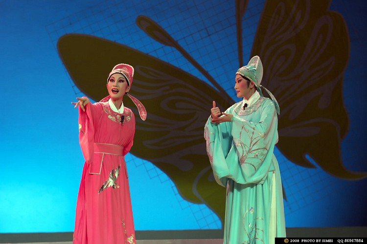

桂剧是广西主要地方剧种，有着较悠久的历史，约在明代中叶便开始发端，它以弹腔为主，兼唱高腔、昆腔、吹腔及杂腔小调等五种声腔艺术。桂剧用桂林方言演唱，唱腔委婉动人、清澈明亮，表演侧重做工，注重以细腻而富于生活气息的表演手法塑造人物，具有浓郁乡土气息。
桂剧的传统剧目，艺人中间素有"大小本杂八百出"之说，其中约 80 %为弹腔剧目。大部分是历史故事，多在庙会草台连本演出，表演粗犷质朴。如刀马旦的"马步"和武生的"紫金冠",特色显着，为人称道。在城市演出，则以"三小戏"为主，表演细腻，造诣较高。
桂林地处南岭山系的西南部，属典型的"喀斯特"岩溶地貌，遍布全市的石灰岩经亿万年的风化浸蚀，形成了千峰环立、一水抱城、洞奇石美的独特景观。此外，漓江蜿蜒舒缓地萦绕着簇簇青山，山水相依，环境优越，兼之无山不洞，气候温暖湿润，动植物资源丰富，为人类提供了非常良好的生存条件。从考古挖掘中得知，早在3万年至7500年前，就有人类生息、繁衍在这块山清水秀的土地上。

秦始皇统一六国后，设置桂林郡，开凿灵渠，沟通湘江和漓江。桂林从此便成为南通海域，北达中原的重镇。宋代以后，它一直是广西政治、经济、文化的中心，号称"西南会府",直到新中国建立。悠久的历史，为这块古老而美丽的土地孕育了富饶的文化，也孕育了一枝独秀的桂剧艺术。
桂剧，发源于桂林，形成于明末清初，已有近三百年的历史，旧称"桂林戏""桂班戏",流传于广西北部、东部和中部地区，波及广西全境及湖南、贵州、云南、广东等地区，受到流传地区人们的喜爱，是广西最具代表性的地方剧中之一。
据史料记载，明末清初，昆山、弋阳和乱弹等腔已流行于桂林一带。 康熙、乾隆之后，随着"花部"的繁衍，皮黄曲系的风行，安徽徽调等也流入桂林，逐步与桂林的语言及民间音乐融合，形成了以弹腔为主，兼唱高腔、昆腔、吹腔及杂腔小调等五种声腔的艺术剧种，桂剧由此进入兴盛发展时期。
道光年间，桂林有三合班、三庆班，组织者不详，这是桂林最早的草台班。到光绪二十二年（1896），唐景崧为"桂林春班"撰写《看棋亭杂剧》40出，成为桂剧第一批独有剧目。光绪二十八年（1902年），桂林建立起第一个戏院--景福园，之后又相继建起和园、仪园戏院。从此，桂剧逐渐进入剧场作固定性的演出。这些戏院竞争相去天津、上海等地聘请京剧演员来桂林演出，自此京剧不断流入，在剧目、表演、化妆、服饰、布景等方面，京剧艺术对桂剧的改革产生了很大影响。
1938年后，着名戏剧家欧阳予倩应聘来到桂林从事桂剧改革工作，建立了广西戏剧改进会；1939年成立桂剧实验剧团，由欧阳予倩任团长，建立导演制，吸收新唱腔，编演新剧目，采用布景，美化舞台，开办桂剧学校，使桂剧有了新的起色。30年代末40年代初，欧阳予倩为桂剧创作、改编和加工整理一大批新剧目如《梁红玉》、《打金枝》、《断桥》等，并经他指导排练，参加1944年西南剧展展演，效果极佳，广获好评，桂剧从此进入中国十大戏曲剧种行列。
解放后，桂剧进入新的历史时期。老一辈党和国家领导人毛泽东、周恩来、刘少奇、陈毅给予桂剧极大的关怀。周恩来总理称桂剧为我国的十大剧种之一。《拾玉镯》、《打棍出箱》等，成为各地经常上演的剧目。抗美援朝时期，桂剧远赴朝鲜慰问演出，使古老的桂剧艺术有史以来第一次传到异国他乡。而组建于1951年的桂林市桂剧团，在60年的演出生涯中，是国内同级剧团中，文艺创作最繁荣、精品最多、获奖最多、演出最多的剧团之一。2006年6月，桂剧凭着丰厚的文化底蕴，独特的艺术特点，被列入国家级非物质文化遗产名录。
可以说，桂剧是桂林的一朵艺术奇葩，凝聚了历代艺人和知识分子的智慧和创造才能，以独有的艺术形式记录了近现代桂林社会的历史变迁，包容和展示了桂林所具有的人文精神和审美品格，是桂林社会历史变迁、文化发展珍贵的历史见证。